Running a cloud project
This guide takes a coordinator from nothing to a running project on Collect Earth Cloud: the survey on the server, the plots given out, the team invited and working, the quality checked and the data downloaded. The interpreters keep working in the Collect Earth desktop program; every plot they save reaches the dashboard by itself.
Who does what
| Role | What they do | What they see |
|---|---|---|
| Coordinator | Sets up the project, invites people, gives out plots, decides when answers differ, downloads the data | Everything: every tab, names, quality per person, time spent per plot |
| Reviewer | Helps check the quality | Progress, Map, Quality and Training |
| Collector | Assesses plots in Collect Earth | Their own work only: My work and My quality |
A project can have several coordinators.
Your account and a new project
- Open cloud.collectearth.org and choose Create an account, or Log in if you have one.
- On My projects, press New project, type the Project name and press Create the project.
- The project opens on Setup, with a Getting started checklist: upload the project file, add plot files, invite people, choose who collects each plot file, follow the progress.
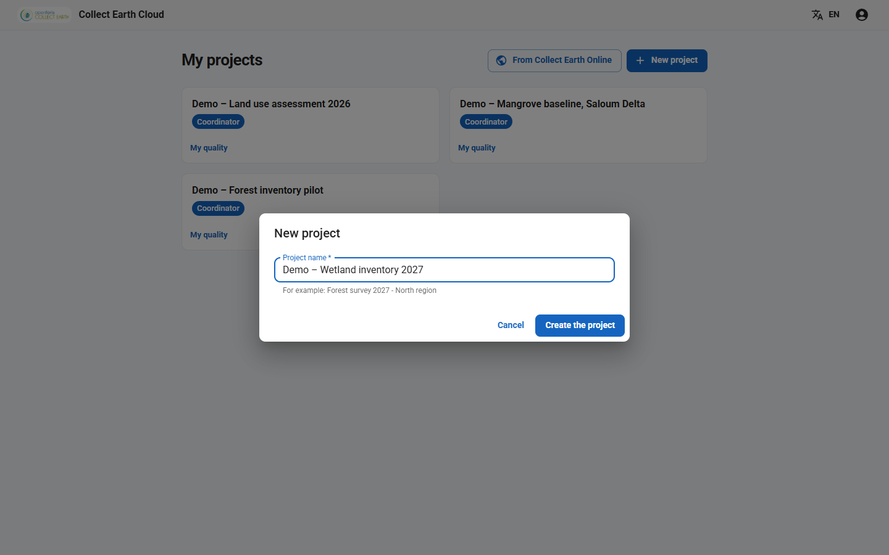
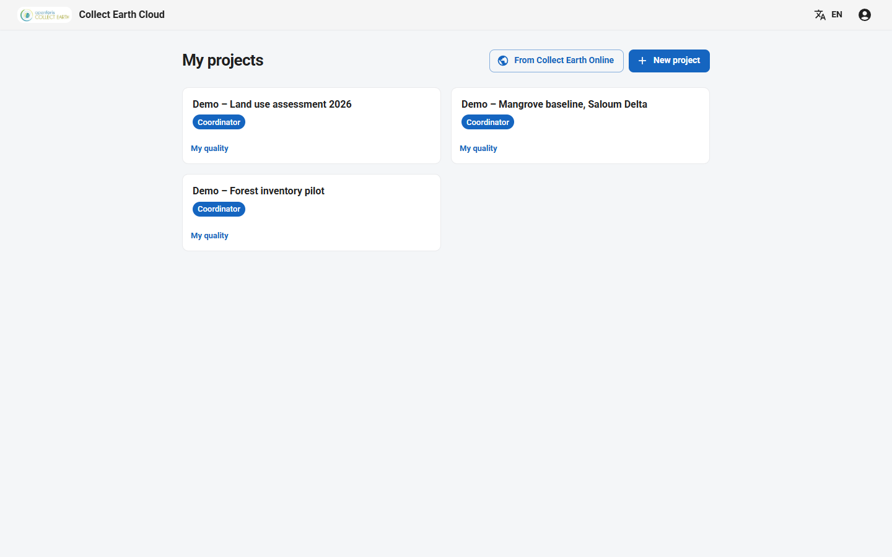
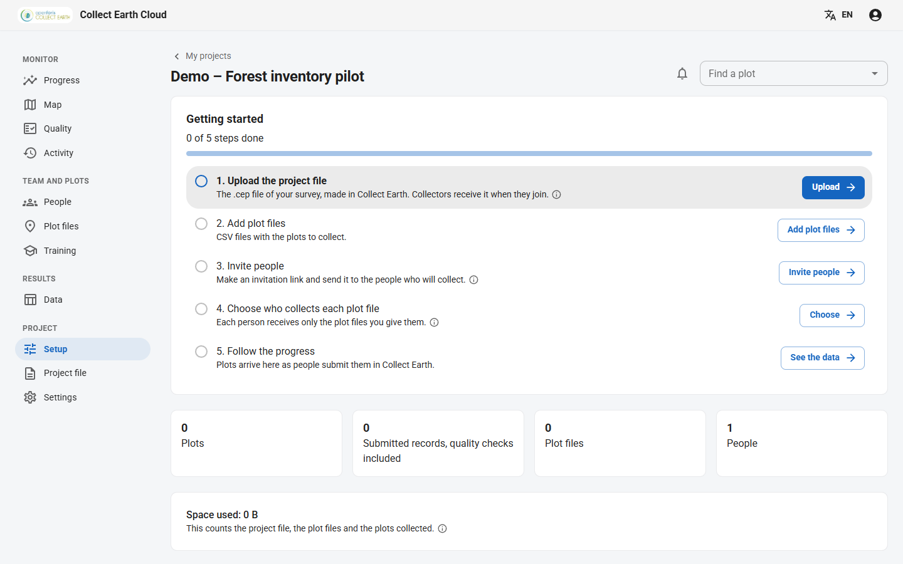
On a wide screen the tabs sit in a sidebar, grouped as Monitor, Team and plots, Results and Project.
The project file
The project file (.cep) holds the survey: the questions, the form and the project's settings. It is the same file Collect Earth opens on a computer. Make it with the Collect Earth survey designer.
- Open the Project file tab and drag the
.ceponto it, or press Choose the .cep file. - If the file carries plot grids, choose Merge into one plot file or add them as separate files.
- To change the survey later, press Choose a new version. Each interpreter's Collect Earth fetches the new version by itself.
The plot files
A plot file is a CSV with one row per plot: the plot id, the latitude and the longitude, then any extra columns the survey expects. On the Plot files tab, drag one or more CSV files in. They appear under Files uploaded.
No plot file yet? Design the plots makes one for you: draw plots At random, On a grid or At random within strata in an area, or take them from SIGRID by country, province or district, with the distance between plots you choose.
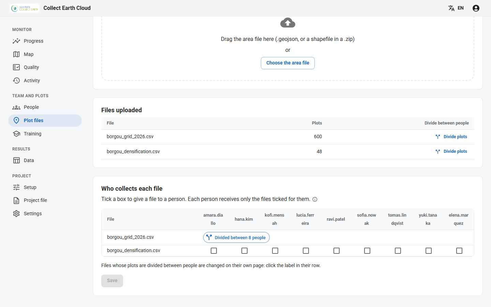
Inviting people
- On the People tab, under Invite people, choose how they join: Collector, Reviewer or Coordinator.
- Choose How many people can use it and how long The link works for. One link for many people works well for a training room.
- Press Make the invitation link and copy it. It is shown only once. Send it by email or chat.
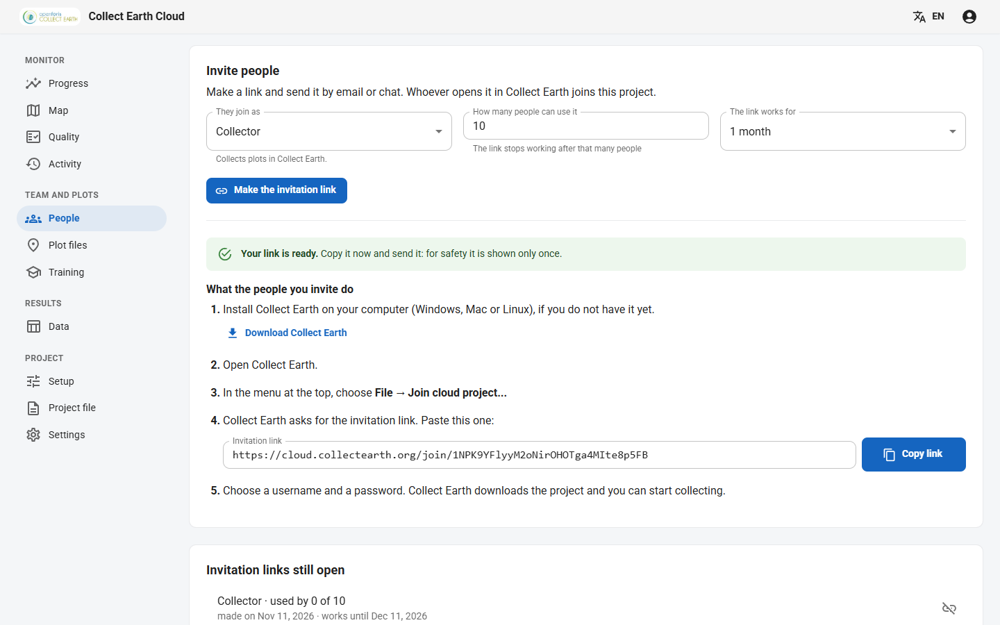
The person who opens the link sees how to join: install Collect Earth, join the project from its menu, paste the link, and choose a username and password. Collect Earth then downloads the project by itself. See joining a cloud project in the interpreters' guide.
Open links are listed under Invitation links still open; Stop this link closes one. Under People in this project you can change someone's role, remove them, or leave them out of the results.
Giving out the plots
Under Who collects each file, tick the people for each file and press Save to give a whole file to them. To share a file out, press Divide plots:
- Evenly between people, or By a column such as a province or a stratum, giving each value to one person in turn, or each person a share in percent.
- Which plots go together: In the order of the file, Mix them, or Keep plots that are close on the map together.
- Quality check: also give some plots to a second person, to compare their answers. Neither knows which plots are shared.
Press Preview to see the result, then Apply.
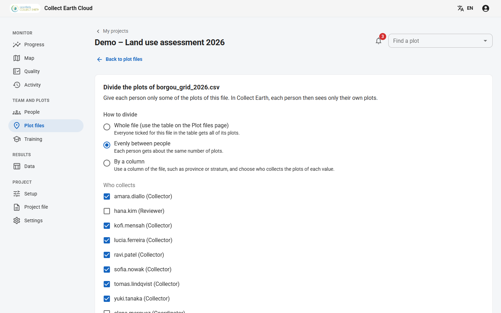
When someone leaves or falls behind, Move unfinished plots to… hands their remaining plots to someone else and leaves what they did untouched.
Following the work
Progress shows how many plots are submitted, day by day, who Needs attention, and When will it be done? against your deadline.
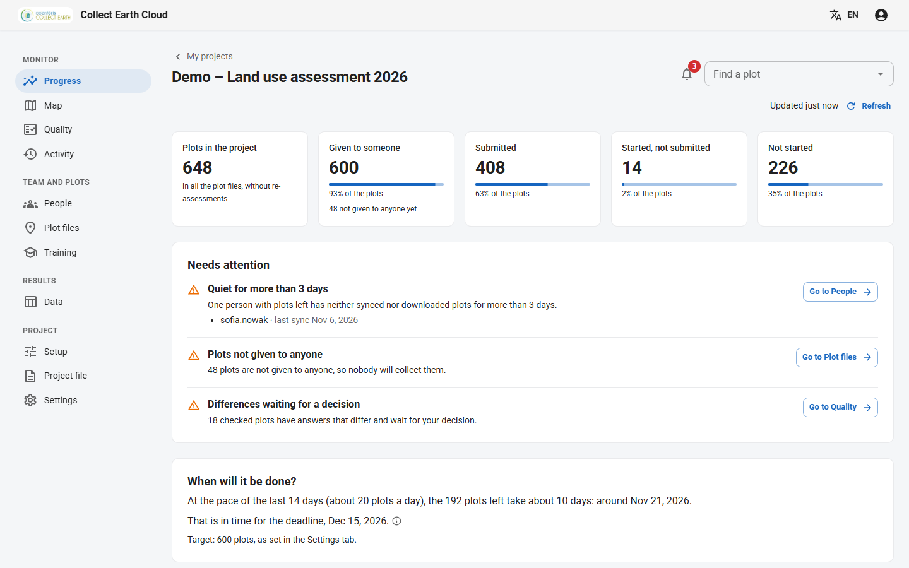
People shows how each person is doing: plots, speed, last sync and agreement, with a page per person. Only coordinators see the time spent on each plot; very quick plots are flagged.
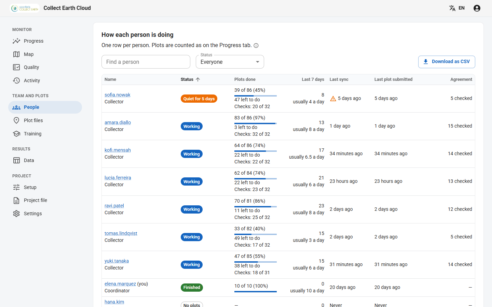
Map shows every plot coloured by its status. Click a plot to open its page with every answer it received.
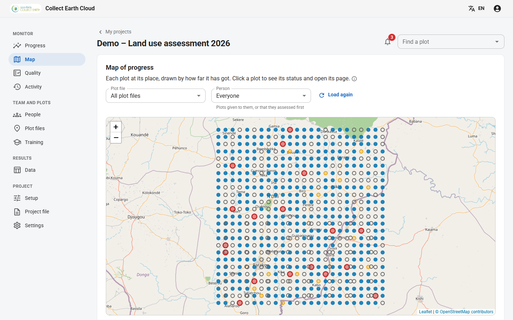
Activity lists what happened (plots submitted, files changed, people joined), and gives a weekly summary and downloads.
Checking the quality
The Quality tab compares the answers of plots that two people assessed blind.
- Automatic checks: copy the first plots each person submits, or a share of all their plots, to chosen checkers as blind second assessments. Press Draw now to start at once.
- Review queue: for each plot where the answers differ, decide First is right, Check is right or Both need another look. Decide many plots at once speeds this up.
- Reference plots: plots an expert has assessed. Every collector also gets them blind, which measures each person's accuracy.
- Agreement by question, Agreement by person, Mixed-up answers and Over time show where the team disagrees.
- Plots worth a look lists plots done very fast, with the same answers as before, with required answers missing, or edited after a decision.
- Guidance notes share decisions with the team, so everyone answers the same way next time.
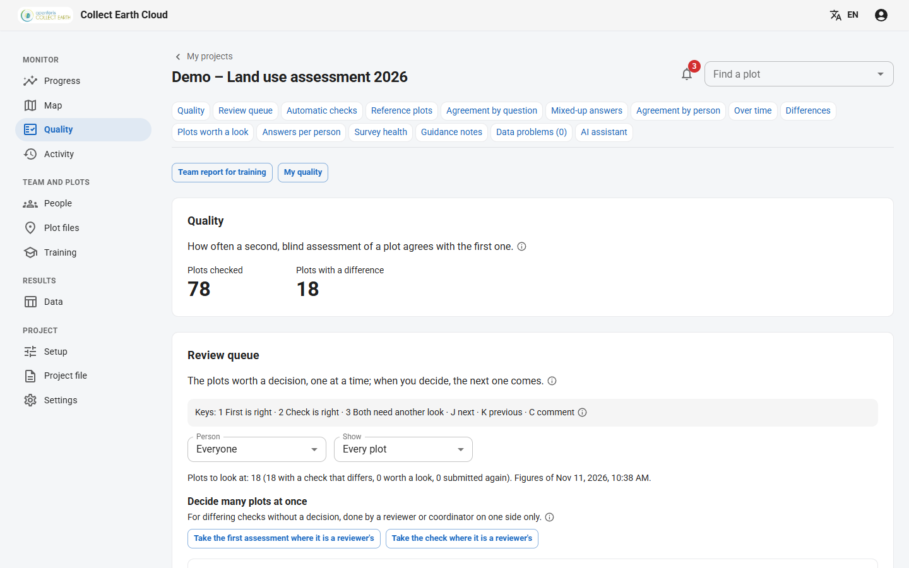
Collectors don't need the dashboard to work, but they can follow their own progress, quality and training on My work.
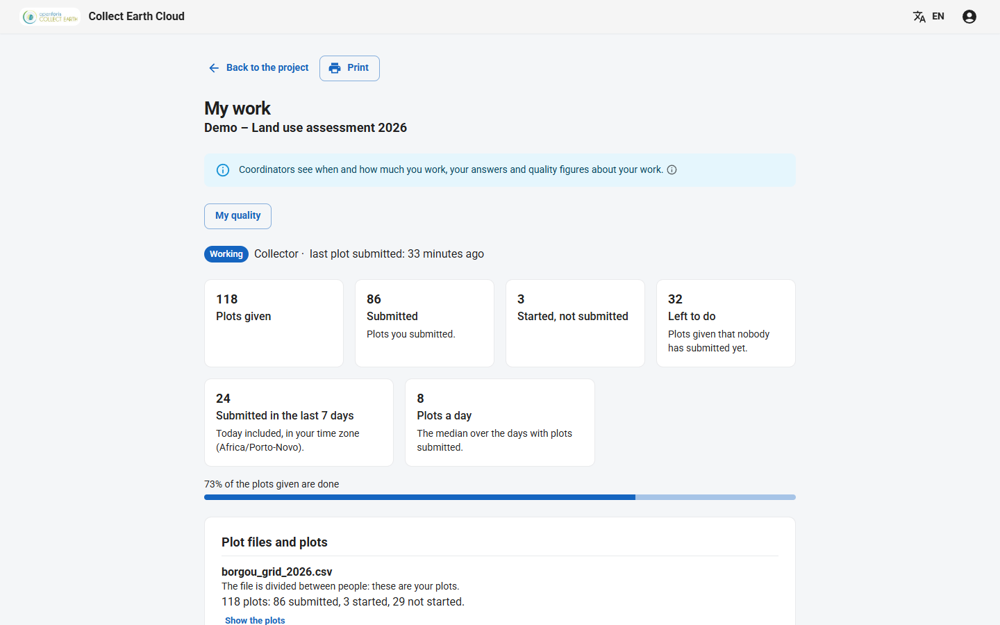
Reviewers can help: they see the review queue, plots worth a look and the answers per person, without the names of the people behind the time figures.
Training the team
On Training, press Add a training set and choose the kind:
- Calibration: everyone assesses the same plots, to measure how much the team agrees before the real work starts.
- Learning plots: plots with a golden interpretation, so each person sees where they went wrong.
Each set has its own page with the golden interpretation, how much people agree, scores, plot by plot results and a printable report. Training plots are kept apart: they never count in progress, quality figures or downloads.
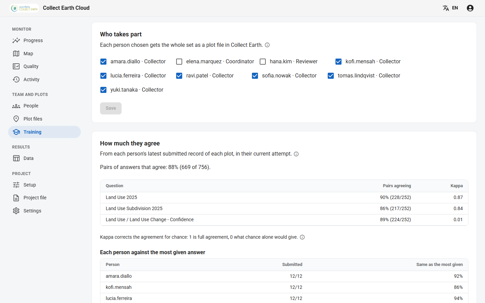
Getting the data out
On the Data tab:
- Download the data: a CSV of every answer, with the coordinator's final decision for each plot. Tick Leave out where the plots are to share it without coordinates.
- Open the analysis: tables and charts in the browser, a stand-alone file to share, and the Uncertainty (IPCC) of the land areas.
- Collect Earth backup: the whole project, to open in Collect or Collect Earth.
- Import data from Collect Earth: bring in plots assessed in a stand-alone Collect Earth (its compressed XML export), matching each person in the file to an account.
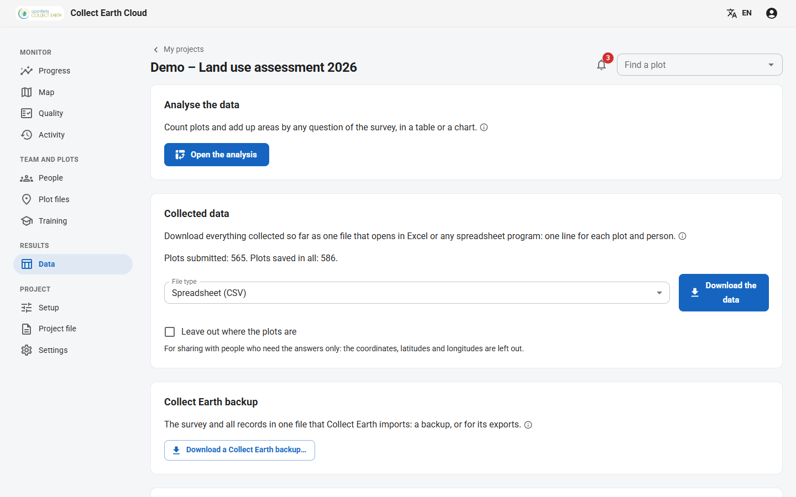
Project settings
- Progress: a deadline, a target in plots, and after how many quiet days a person is flagged.
- Progress links for funders: a read-only progress page you can share without an account.
- AI assistant: an optional helper for reviews, if the server allows it.
- Project status: close a finished project, archive it, or reopen it.
- Copy this project, with or without its people and assignments, to start a similar one.
Bringing in a Collect Earth Online project
On My projects, choose From Collect Earth Online and paste the CEO project's address or number, then Read from CEO. The questions and plots of a public project come across directly; a CSV of answers already collected can be added too. Plot and sample shapes, such as FRA's hexagons, are copied in the background while you work.
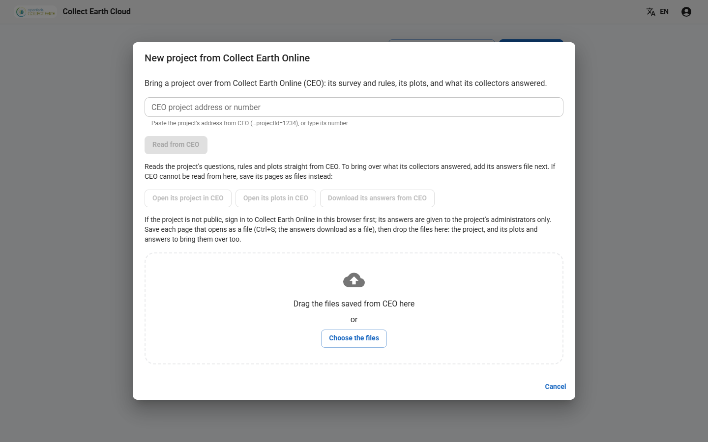